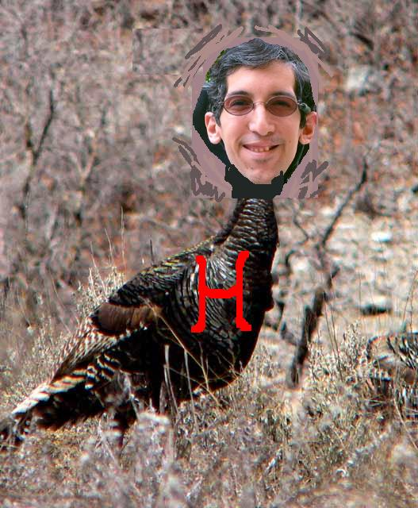

Hector: Turkey, or not to be
Chapter 1
There was a dark cloud rising from the desert floor and out of the
cloud appeared a turkey with rings of fire and a stare that would burn
a hole through a black hole but regardless i was drawn to this
mysterious turkey as i noticed his leg had been bitten off by me the
prior thanksgiving this was no ordinary turkey this was hector and he
was back for vengence.
Chapter 2
i knew what hector wanted i had bitten his leg off the prior
thanksgiving as i shoveled forkfull upon forkfull of mashed potatoes
into my mouth hector and i stood face to face in the tunnels uptown
the rats own dream gunned him down so there we were hector and i i and
hector and in the flick of the night hector reached for his moment and
tried to make an honest stand beneath the city two hearts beat soul
engines running through a night so cold as hector and i observed
eachother both puzzled in sun tzu strategy it struck like an electric
eel induced shocker
Chapter 3
i knew what i had to do what had to be done what needed to come to furition and that was to call hectors mother you may laugh and think this is a pussy move but if you knew hectors mother the way i did you would think twice about your prior thoughts hectors mother had the biggest breasts ever and the farms had been trying to kill her for years cuz they knew her breasts would fetch millions in the open market Foodtown and A&P's management and boards had been engaged in a hostile bid for the breasts for years a battle that has not been witnessed since the RJR Nabisco leveraged buyout everyone wanted a piece of hectors mother but she was so strong she never gave in to the almighty dollar cuz she knew it would be instant death like cutting off your nose to spite your face this strength was all the buzz in hectors town and all feared hectors mother yes yes yes calling hectors mother would be just what i needed to do